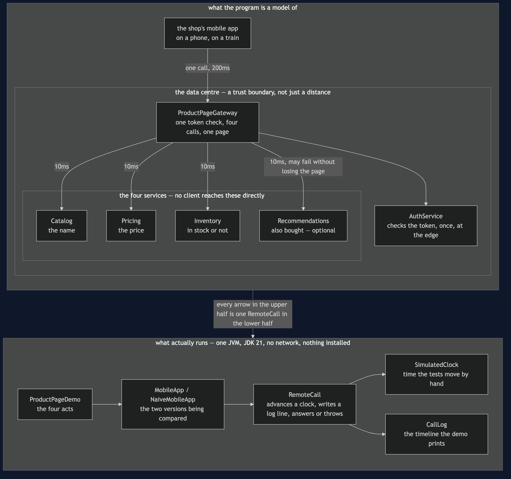

API Gateway Pattern — Architecture Diagram
Where each piece of this project sits, and — because this project starts nothing — what each piece stands for. The class diagram shows the types and the sequence diagrams show the order of the calls; this one answers the question those two cannot, which is what would be running, and how far apart would it be.
Read the picture as two halves stacked. The lower half is the literal truth: one Java program, one process, no network, nothing installed. The upper half is what that program is a model of: a phone on a train, a data centre some distance away, and five services inside it.
The one number that carries the whole argument is on the arrows. A call from the phone to the data centre is MOBILE_LATENCY_MILLIS = 200. A call between two services inside the data centre is INTERNAL_LATENCY_MILLIS = 10. Twenty times, per call, and a product page needs four calls. Those two constants are in StoreServices, so the ratio is a fact the code enforces rather than a claim this document makes.
The second thing to look for is the dashed boundary around the four services. Nothing outside that boundary has an arrow to anything inside it — every line that crosses it ends at the gateway. That missing set of arrows is the pattern drawn as an absence: once the gateway exists, the app does not know that Pricing has an address, and cannot acquire that knowledge by accident.

What the diagram is telling you to count
One line crosses the data centre boundary, not four. That is the whole saving, and it is a saving in crossings rather than in work. The gateway still makes four calls; they are simply on the cheap side of the boundary. 240 milliseconds against 800, and one token check against four.
AuthService hangs off the gateway, not off each service. Checking a token is work, and doing it once at the edge instead of four times is most of the difference between the two acts. It is also the first thing people put in a gateway in real systems, and the reason the box is drawn there rather than beside the four services.
Recommendations has a labelled arrow and the other three do not. That label is the only policy in the picture: this one service is optional and the others are not. It is a fact about a shop rather than about software, and the point of the pattern is that it now lives in one place instead of in every client.
What it deliberately leaves out
There is no load balancer, no service registry, no circuit breaker and no cache, and the gateway is drawn as one box rather than as the several replicas it would really be. Each of those is a pattern of its own later in this category, and drawing them here would make the picture describe a system rather than a pattern.
There is also no second gateway. One gateway serving a phone, a desktop browser and a partner API eventually pulls in three directions at once, and the answer to that is Backends for Frontends in the platform category — a different pattern with a different bill, and out of scope for this picture.
Most importantly, the lower half is not a small version of the upper half. It is a model. RemoteCall cannot be slow in a way nobody predicted, cannot half-answer, and cannot be up for the app and down for the gateway. What the model does preserve exactly is the shape: what objects exist, what each decides, and where the error handling goes.